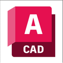

A▲ 3DCGとは
A▼ 制作の流れ
B▲ モデリング手法
B▼ データ構造①
C▲ データ構造②
C▼ スカルプト
D▲ ソフト
D▼ 用語集・プリミティブ
K01-A ▲
K 01 — 1/4
Ch.01 / 4.5
3DCGとはなにか
私たちが生きる世界は「
3次元
（タテ・ヨコ・奥行き）」です。
コンピューターの中にも同じ3D空間を再現できます。それが
3DCG
3
D
imension +
C
omputer
G
raphics
📐 3"D"ってなに？
·
0D（0次元）
点
位置のみ
→
╱
1D（1次元）
線（辺）
点が連なる
→
▭
2D（2次元）
面
辺が広がる
→
🎲
3D（3次元）
立体
面が積み重なる
📋
3DCG制作の流れを見てみよう
3DCGの制作はいくつかの工程に分かれています。
この講座
ではそのうちの一部を体験します。まず全体像を見ておきましょう。
K01-A ▼
K 01 — 裏 1/4
Ch.01 / 4.5
3DCG制作の流れ
1
プリプロダクション
コンセプトアート・設定・絵コンテ
S02 / S05
2
モデリング
形を造る — スカルプト・ポリゴンなど
S01-03 / S06-07
3
サーフェシング
表面の情報を整える — マテリアル・テクスチャなど
S02-03 / S06
4
リギング・アニメーション
骨格を仕込んで動かす
講座外
5
ライティング
光源・環境光・カメラ設定
S04 / S07
6
レンダリング・ポストプロセス
画像として出力・色補正・エフェクト
S04 / S08
7
コンポジット
映像合成・仕上げ
講座外
講座で扱います
一部体験します
講座外（いつか挑戦！）
3DCGでは、この3D空間にポリゴン（三角・四角形の面）を組み合わせてモノの形を作ります。その形に色・質感・光をあててレンダリングすることで、1枚の画像として出力されます。
※ 詳しくはB▼参照
K01-B ▲
K 01 — 2/4
Ch.01 / 4.5
モデリングの手法
3DCGにおいて、ものや形はすべて
データ（数値）
で表されます。
モデリング
とは、そのデータを作ったり、データの中身を動かすことで形を変えることです。制作の出発点となる
最重要工程
です。
形を自分の手で操作する
ボックスモデリング（ポリゴンモデリング）
頂点・辺・面をひとつひとつ手動で操作します。ゲーム・映像制作の主流です。
例：Blenderのエディットモード
スカルプト
本講座
ブラシで複数の頂点を一括操作します。直感的に形を作ることができます。
例：Nomad Sculpt・ZBrush
NURBS編集
制御点（コントロールポイント）を操作して曲面を定義します。
例：Rhinocerosのカーブ編集
プログラムやAIが形をつくる
プロシージャル
コード・数式・ノードで形を自動生成します。出力はポリゴンメッシュのことが多いです。
例：Processing・Houdini・Blenderのジオメトリノード
AIモデリング
テキスト・画像・スケッチから形を推論・生成します。出力形式はさまざまです。
例：Point-E・Shap-E・TripoSR
K01-B ▼
K 01 — 裏 2/5
Ch.01 / 4.5
3Dデータのカタチ ①
各手法が扱うデータの種類はさまざまです。
形をどう
記録・表現するか
の違いが、用途や得意なことの違いにもつながります。
📦 データ構造の種類（1/2）
1
ポリゴン メッシュ
ポリゴンメッシュ
← ポリゴンモデリング・スカルプト
頂点・辺・面の集合体です。面を組み合わせて形を表現します。3DCGの主流形式です。
映像・ゲーム・キャラクター全般
2
NURBS
NURBS
← NURBS編集
数式（制御点＋重み）で曲面を定義します。拡大しても真に滑らかな曲面を保ちます。
工業設計・自動車・建築・CAD
3
ボクセル
ボクセル
3D空間をグリッドに分割し、各セルのON/OFFで形を表現します。内部構造を持てます。
医療CT・地形破壊・AI学習
※ 流体シミュレーション・リメッシュにも使われます
K01-C ▲
K 01 — 裏 3/5
Ch.01 / 4.5
3Dデータのカタチ ②
📦 データ構造の種類（2/2）
4
点群
点群（Point Cloud）
座標と色を持つ点の集合です。面・辺の概念がなく、3Dスキャナーの生データ形式です。
測量・建築・自動運転・LiDAR
5
SDF
SDF（符号付き距離関数）
空間の各点が表面からどれだけ離れているかを関数で表現します。形の合体・くり抜きが得意です。
AIによる3D生成・リアルタイムCG
6
Gaussian Splat
3D Gaussian Splatting
点群を発展させ、各点に楕円体の広がりと透明度を付加したものです。写真・動画から高速に3Dシーンを再構成できます。
写真・動画からの3D再構成・AI
K01-C ▼
K 01 — 3/4
Ch.01 / 4.5
スカルプトの仕組み
今回の講座で使うスカルプトモデリングについて詳しく見ていきましょう。スカルプト（彫刻）というその名の通り、すでにあるメッシュに対して、押し出したり盛り上げたりすることで造形するモデリング手法です。
🔬 なぜ形が変えられるのか
·
頂点
Vertex
x・y・z の
座標をもつ点
→
╱
辺
Edge
頂点と頂点を
つないだ線
→
▭
ポリゴン
Face
辺で囲まれた
三角・四角形
→
🎲
メッシュ
Mesh
ポリゴンが
集まった形
🖌️ ブラシ ＝ 頂点の座標を動かす道具
ブラシを当てると、円の範囲内にある
頂点の座標（x・y・z）
が一斉に指定方向へ移動します。粘土と違うのは、動いているのが「物質」ではなく
「数値」
であることです。
📊 ハイポリとローポリ
ハイポリ
頂点が
多い
→ 細かく変形できる →
滑らか
だが処理が重くなります
ローポリ
頂点が
少ない
→ 大まかにしか変形できない →
軽い
が荒くなります
K01-D ▲
K 01 — 裏 3/4
Ch.01 / 4.5
3DCGソフトいろいろ
🛠️ どんなソフトが使われているか
汎用 3DCG
Blender
無料・何でもできます
Maya
映画・アニメの定番です
VFX
Houdini
特殊効果・プロシージャル生成
スカルプト
ZBrush
プロ用スカルプトの定番です
ゲームエンジン
Unity
ゲーム・XR開発の定番です
Unreal Engine
高品質グラフィックスに強いです
設計・建築

AutoCAD / Rhinoceros / Fusion 360 など
数値・図面から正確に設計します。建築・機械・プロダクトデザインに使われます。
今回
使う
Nomad Sculpt
iPadで使えるスカルプトツールです。指とApple Pencilで直感的に操作できます。
⚠️
こまめに保存しよう
Nomad Sculptは
自動保存しません
。
10分に1回
、☰ → Files → 上書き保存しましょう。
K01-D ▼
K 01 — 4/4
Ch.01 / 4.5
用語集 vol.01
メッシュの基礎
ポリゴン
三角・四角形の面です。3D形状の最小単位です。
メッシュ
ポリゴンの集合体です。スカルプトの対象です。
ハイポリ
ポリゴンが密な状態です。滑らかですが処理が重くなります。
ローポリ
ポリゴンが粗な状態です。軽いですが荒くなります。
リメッシュ
メッシュの密度・構造を整え直すことです。
スカルプト操作
スカルプト
ブラシで粘土のように形を作る手法です。
ブラシ
メッシュを変形させる道具です。
マスク
操作したくない部分を保護する機能です。
📦 プリミティブ（基本形状）— Nomad Sculpt
図
スフィア
Sphere
図
ボックス
Box / Cube
図
シリンダー
Cylinder
図
コーン
Cone
図
トーラス ★
Torus
図
チューブ
Tube
図
プレーン
Plane